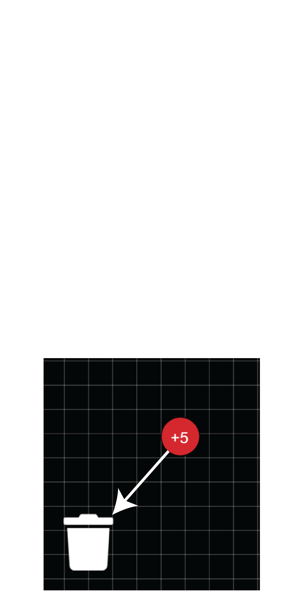

Cerrar
¿Cómo Usar La Aplicación?
Dar Doble Click Para Crear Una Carga.
La Barra Deslizante Debajo De La Carga Puede Alterar La Magnitud y Signo De La Carga.
Puedes Arrastrar La Carga Dejando El Click Presionado

Puedes hacer clic derecho en un cargo para eliminarlo. También puedes hacer clic en el cargo y presionar la tecla "Supr" en tu teclado.
En El Panel Derecho Se Muestran Opciones Que Pueden Modificar La Simulación.
Puede colocar cargas de prueba en la pantalla cuando la casilla de verificación "Modo De Carga De Prueba" está activada haciendo clic en cualquier lugar de la pantalla. Las cargas de prueba se moverán de acuerdo con el campo eléctrico que crean las cargas en pantalla.